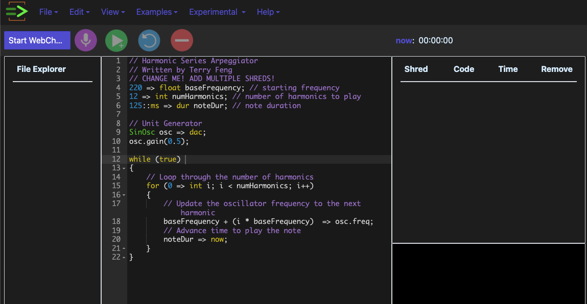

ChucK Web IDE: le retour de ChucK sur le web
Publié le : 2024-02-10
Auteur : Raphaël Maurice Forment
Qu’est-ce que ChucK ?
ChucK est l’un des langages importants de ces deux dernières décennies pour ce qui concerne la programmation musicale en temps réel. Développé par Ge Wang à l’université de Princeton à partir de 2003, il est toujours utilisé là-bas par les musiciens du PlorK (Princeton Laptop Orchestra). Il reste également utilisé dans cette même université pour enseigner la musique électronique. ChucK appartient à la même génération que d’autres langages comme ExTempore d’Andrew Sorensen. L’idée flottait dans l’air à cette époque là qu’il fallait développer des langages permettant de mieux exprimer la relation entre temps, synthèse, écriture musicale et interaction de l’utilisateur. ChucK est désormais utilisé par le SlorK (Stanford Laptop Orchestra) et par un certain nombre de musiciens live coders tels que Celeste Betancur. Le créateur du langage est un défenseur de longue date de la pratique du live coding. Il est également un pionnier du phénomène des Laptop Orchestras, des orchestres d’ordinateur qui cherchent à utiliser les qualités uniques de l’ordinateur portable et des ordinateurs embarqués pour la composition de pièces collaboratives (synchronisation en réseau, spatialisation des musiciens, etc). En fouillant un peu sur internet, on trouve toujours des traces de la pratique du live coding sur ChucK :
ChucK est un langage que l’on rencontre aujourd’hui assez peu dans les discussions autour du live coding. Je n’ai encore jamais vu personne l’utiliser pour une performance. Je ne connais (plus) personne qui l’utilise. SuperCollider règne en maître, avec quelques artistes qui jurent toujours par CSound, Max/MSP ou Pure Data. C’est d’autant plus étonnant que le langage est explicitement conçu pour l’expérimentation temps réel. La sémantique et la syntaxe du langage sont construites autour de cette idée et le système des shred et du spork fait tout pour encourager l’expérimentation.
ChucK sur le web
J’ai vu passer, il y a peu, des mentions d’une nouvelle version de ChucK qui tourne directement dans un navigateur internet : voici le lien. Phénomène générationnel là aussi, il s’agit maintenant de tout faire fonctionner à partir de WebAssembly et des nouvelles technologies de l’audio sur le web. Quelques articles universitaires ont été publiés sur le sujet comme celui-ci ou celui-là. Le travail est en cours, avance bien, et pour le peu que j’ai pu tester, cela ressemble à s’y méprendre à la version native qui existe toujours et qui tourne toujours très bien sur la plupart des OS. Cela peut valoir le coup de donner une chance à ce langage pour les plus curieux. Beaucoup d’exemples ont déjà été portés et/ou réécrits depuis l’IDE de base qui en fournissait déjà pas mal. Le travail réalisé est déjà impressionnant et il y a fort à parier que cela va se stabiliser très vite.